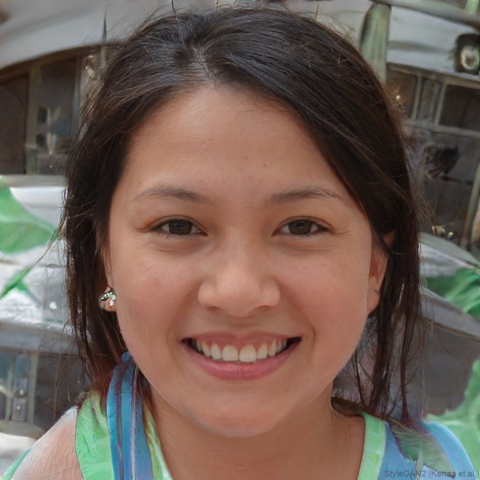

Juliana Martins
Analista de RHIdade34 anosLocalFlorianópolis, SCCasaCasada, um filho
ORGANIZADAANSIOSACOLABORATIVA
BIOGRAFIA
Divide as despesas da casa com o marido, Diego. Criou uma planilha para controlar os gastos, mas só atualiza quando lembra. No fim do mês nunca sabe ao certo para onde o dinheiro foi, e a conversa sobre gastos costuma terminar em discussão. Quer montar uma reserva de emergência e planejar a primeira viagem em família.
DORES
- Gastos espalhados em dois bancos e três cartões
- Planilha que dá trabalho manter
- Fatura do cartão que sempre surpreende
- Conversas sobre dinheiro que viram cobrança
OBJETIVOS
- Saber quanto pode gastar em cada área
- Montar uma reserva de emergência
- Planejar a viagem da família
- Dividir as decisões com o parceiro
PERSONALIDADE
VALORES
- Segurança
- Parceria
- Tranquilidade